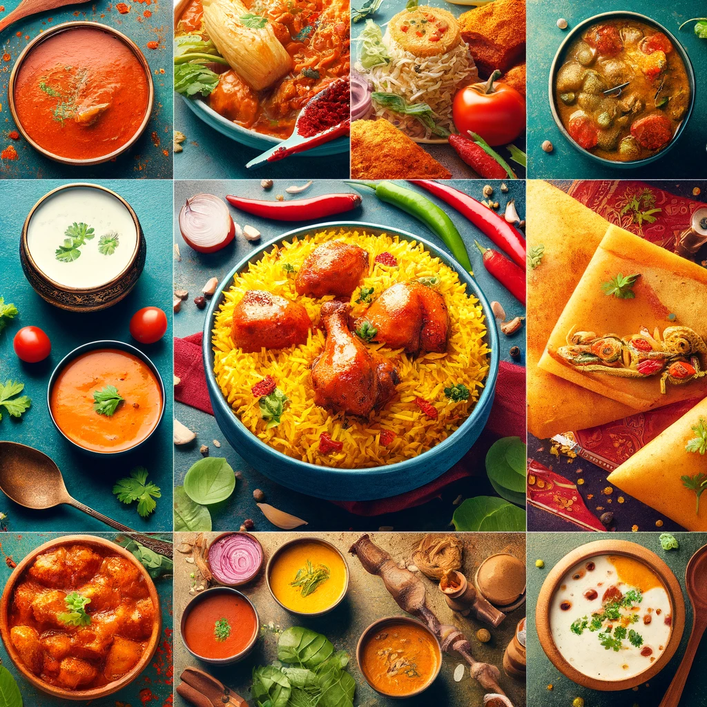
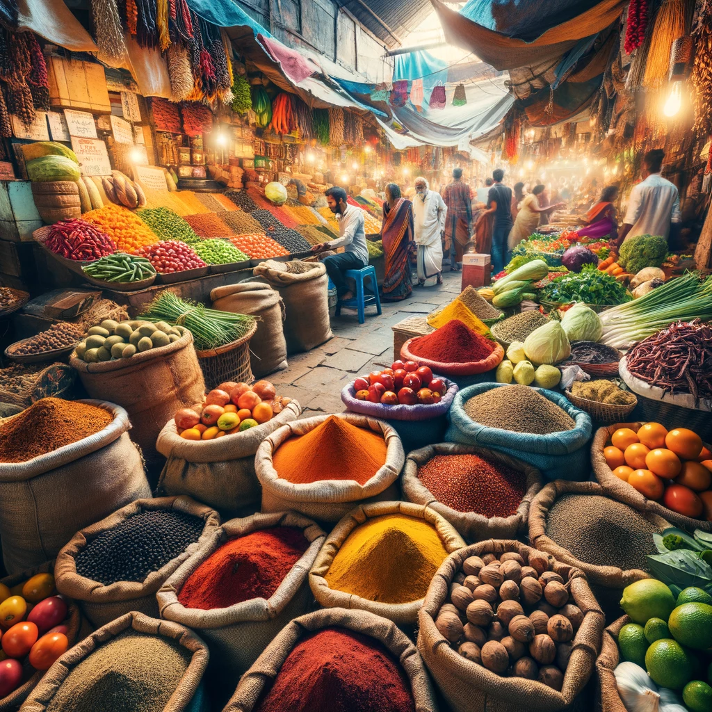

Welcome to the Digital Culinary Journey Through the Indian Food Industry
Explore the vibrant and diverse world of the Indian food industry with us! From the lush fields of Punjab to the coastal shores of Kerala, India's culinary landscape is as varied as its culture. Our project takes you on an interactive voyage through the heart of Indian cuisine, uncovering the secrets behind the flavors that have captivated palates worldwide.

A Collage of Traditional Indian Dishes

A Bustling Indian Market Scene
The Indian food industry is a tantalizing mix of tradition and innovation. Delve into the rich history behind iconic dishes like Butter Chicken, Biryani, and Masala Dosa, and see how modern culinary techniques are reimagining these classics for the 21st century.